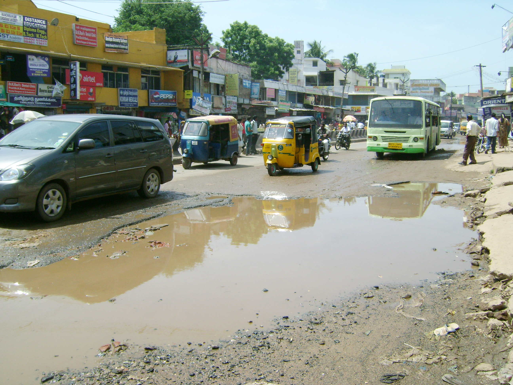
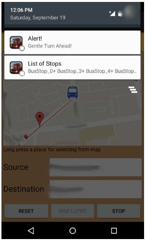
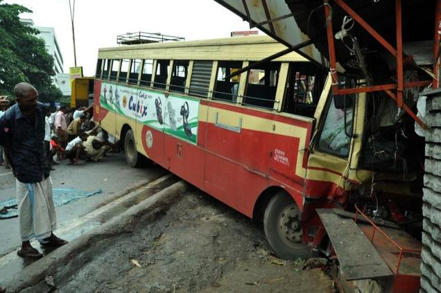
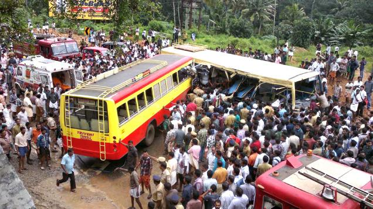
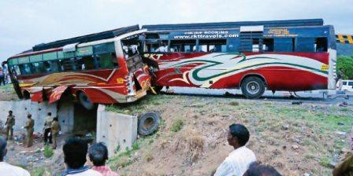
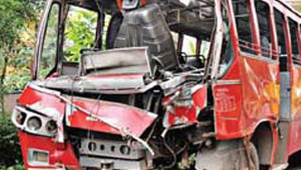
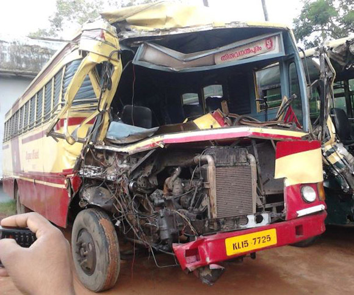
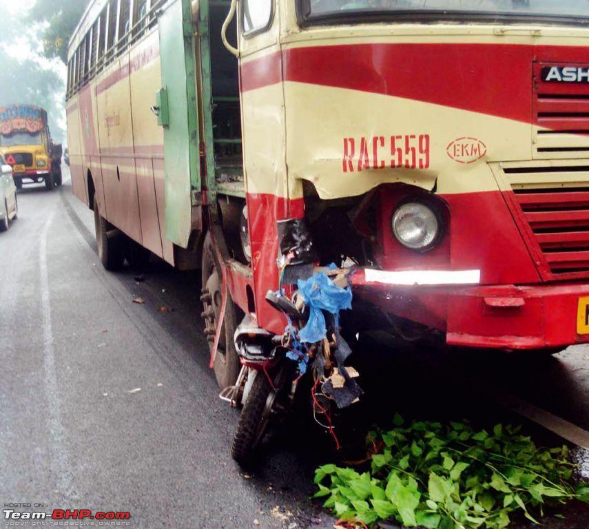
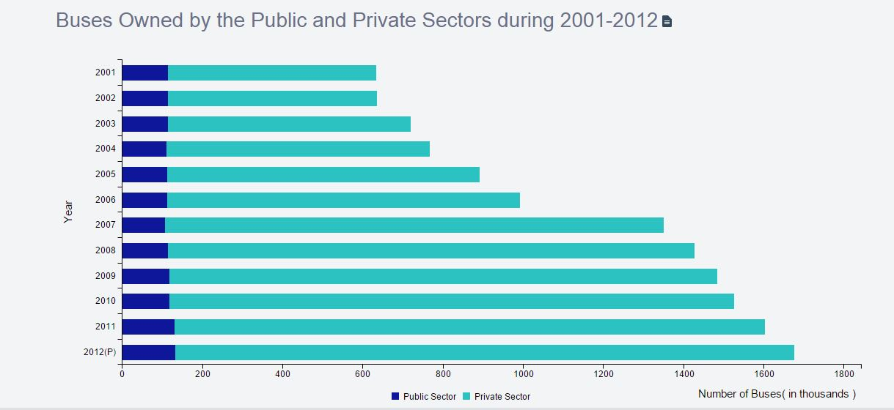

UrbanEye
“A developed country is not a place where the poor have cars. It’s where the rich use public transport”- Enrique Penalosa, former Mayor of Bogot, Colombia
In developing countries like India, the key public transport service quality attributes like comfort, safety and convenience as perceived by passengers are very poor due to unplanned and poorly maintained road and bus infrastructure, chaotic schedules, overcrowded buses, reckless driving, etc.
Leveraging upon the massive inflitration of smart-phones, we come up with a system which may alleviate some of the problems of daily commuters.
Crowd
Public transport serves a major part of city commuters, especially the daily commuters. Studies show that most of the routes do not have sufficient number of buses to cater to the needs and hence are frequently crowded.

Chaos
Transport infrastructure is poorly maintained; this includes poor road condition, unplanned creation of bus stops, no lane and wrong side driving as a result of poor law enforcement many more
Change
We present a smart-phone based energy efficient navigation-alert system which would improve bus travel experience by assisting a passenger to make his journey convenient even in such chaotic transport environment.
News Articles
(Click on the images* for the article)
Chattisgarh
Kerela
Tamil Nadu
Kerela
Andhra Pradesh
Delhi
An Interesting Data
*Some of the images in the news article are just representative and not related to the article.